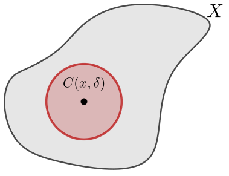

Mathematical Analysis
Lecture 20
10.2 Topology
|
Definition 10.2.1. Let $(X,d)$ be a metric space, $x \in X$, and $\delta > 0$. Define the open ball, or simply ball, of radius $\delta$ around $x$ as \begin{equation*} B(x,\delta) := \bigl\{ y \in X : d(x,y) \lt \delta \bigr\} . \end{equation*} |
10.2 Topology
|
Definition 10.2.1. Let $(X,d)$ be a metric space, $x \in X$, and $\delta > 0$. Define the open ball, or simply ball, of radius $\delta$ around $x$ as \begin{equation*} B(x,\delta) := \bigl\{ y \in X : d(x,y) \lt \delta \bigr\} . \end{equation*} |

|
10.2 Topology
|
Definition 10.2.1. Let $(X,d)$ be a metric space, $x \in X$, and $\delta > 0$. Define the open ball, or simply ball, of radius $\delta$ around $x$ as \begin{equation*} B(x,\delta) := \bigl\{ y \in X : d(x,y) \lt \delta \bigr\} . \end{equation*} Define the closed ball as \begin{equation*} C(x,\delta) := \bigl\{ y \in X : d(x,y) \leq \delta \bigr\} . \end{equation*} |

|
10.2 Topology
|
Definition 10.2.2.
Let $(X,d)$ be a metric space.
A subset $V \subset X$
is open
if for every $x \in V$, there exists a $\delta \gt 0$ such that
$B(x,\delta) \subset V$.
|
10.2 Topology
|
Definition 10.2.2. |

Open neighborhood |
10.2 Topology
Theorem 10.2.1. Let $(X,d)$ be a metric space.
- $\emptyset$ and $X$ are open.
- If $V_1, V_2, \ldots, V_k$ are open subsets of $X$, then $$ \ds \bigcap_{j=1}^k V_j \;\text{ is also open.} $$
- If $\{ V_\lambda \}_{\lambda \in I}$ is an arbitrary collection of open subsets of $X$, then $$\ds \bigcup_{\lambda \in I} V_\lambda \;\text{ is also open.}$$
Topology
Open and Closed Sets
Theorem: Suppose $(X,d)$ is a metric space, and $Y \subset X$. Then $U \subset Y$ is open in $Y$ (in the subspace topology), if and only if there exists an open set $V \subset X$ (so open in $X$), such that $V \cap Y = U$.
Theorem: Suppose $(X,d)$ is a metric space, $V \subset X$ is open, and $E \subset X$ is closed.
- $U \subset V$ is open in the subspace topology if and only if $U$ is open in $X$.
- $F \subset E$ is closed in the subspace topology if and only if $F$ is closed in $X$.
10.3 Sequences and convergence
Definition 10.3.1. A sequence in a metric space $(X,d)$ is a function $x \colon \N \to X$. As before we write $x_n$ for the $n$th element in the sequence, and for the whole sequence use the notation \begin{equation*} \{ x_n \}_{n=1}^\infty . \end{equation*}
A sequence $\{ x_n \}$ is bounded if there exists a point $p \in X$ and $B \in \R$ such that \begin{equation*} d(p,x_n) \leq B \quad \text{for all } n \in \N. \end{equation*}
10.3 Sequences and convergence
Definition 10.3.2. A sequence $\{ x_n \}$ in a metric space $(X,d)$ is said to converge to a point $p \in X$ if for every $\epsilon \gt 0$, there exists an $M \in \N$ such that $d(x_n,p) \lt \epsilon$ for all $n \geq M$. The point $p$ is said to be the limit of $\{ x_n \}$. We write \begin{equation*} \lim_{n\to \infty} x_n := p . \end{equation*}
A sequence that converges is convergent. Otherwise, the sequence is divergent.
Note: Compare this with the definition of convergence in $\R.$
10.3 Sequences and convergence
Theorem 10.3.1. A convergent sequence in a metric space has a unique limit.
Theorem 10.3.2. A convergent sequence in a metric space is bounded.
10.3 Sequences and convergence
Theorem 10.3.1. A convergent sequence in a metric space has a unique limit.
Theorem 10.3.2. A convergent sequence in a metric space is bounded.
Theorem 10.3.3. Let $\{ x_k \}_{k=1}^\infty$ be a sequence in $\R^n$, where we write $x_k = \bigl(x_{k,1},x_{k,2},\ldots,x_{k,n}\bigr) \in \R^n$. Then $\{ x_k \}_{k=1}^\infty$ converges if and only if $\{ x_{k,i} \}_{i=1}^\infty$ converges for every $i=1,2,\ldots,n$, in which case \begin{equation*} \lim_{j\to\infty} x_k = \Bigl( \lim_{k\to\infty} x_{k,1}, \lim_{k\to\infty} x_{k,2}, \ldots, \lim_{k\to\infty} x_{k,n} \Bigr) . \end{equation*}
10.3 Sequences and convergence
Theorem 10.3.4. Let $(X,d)$ be a metric space and $\{x_n\}$ a sequence in $X$. Then $\{ x_n \}$ converges to $x \in X$ if and only if for every open neighborhood $U$ of $x$, there exists an $M \in \N$ such that for all $n \geq M$, we have $x_n \in U$.
10.3 Sequences and convergence
Theorem 10.3.4. Let $(X,d)$ be a metric space and $\{x_n\}$ a sequence in $X$. Then $\{ x_n \}$ converges to $x \in X$ if and only if for every open neighborhood $U$ of $x$, there exists an $M \in \N$ such that for all $n \geq M$, we have $x_n \in U$.

10.3 Sequences and convergence
Theorem 10.3.5 Let $(X,d)$ be a metric space, $E \subset X$ a closed set, and $\{ x_n \}$ a sequence in $E$ that converges to some $p \in X$. Then $p \in E$.
10.4 Continuity
in metric spaces
Definition 10.4.1. Let $(X,d_X)$ and $(Y,d_Y)$ be metric spaces and $c \in X$. Then $f \colon X \to Y$ is continuous at $c$ if for every $\epsilon \gt 0$ there is a $\delta \gt 0$ such that whenever $x \in X$ and $d_X(x,c) \lt \delta$, then $d_Y\bigl(f(x),f(c)\bigr) \lt \epsilon$.
When $f \colon X \to Y$ is continuous at all $c \in X$, then we simply say that $f$ is a continuous function.
Note: Compare this with the definition of continuity in $\R.$
10.4 Continuity
in metric spaces and sequences
Theorem 10.4.1. Let $(X,d_X)$ and $(Y,d_Y)$ be metric spaces. Then $f \colon X \to Y$ is continuous at $c \in X$ if and only if for every sequence $\{ x_n \}$ in $X$ converging to $c$, the sequence $\bigl\{ f(x_n) \bigr\}$ converges to $f(c)$.
Note: Compare this Theorem with its version in $\R.$
10.4 Continuity
with Topology
Lemma 10.4.2. Let $(X,d_X)$ and $(Y,d_Y)$ be metric spaces. A function $f \colon X \to Y$ is continuous at $c \in X$ if and only if for every open neighborhood $U$ of $f(c)$ in $Y$, the set $f^{-1}(U)$ contains an open neighborhood of $c$ in $X$.
Theorem 10.4.3. Let $(X,d_X)$ and $(Y,d_Y)$ be metric spaces. A function $f \colon X \to Y$ is continuous if and only if for every open $U \subset Y$, $f^{-1}(U)$ is open in $X$.
10.4 Continuity
with Topology
For every neighborhood $U$ of $f(c)$, the set $f^{-1}(U)$ contains an open neighborhood $W$ of $c$.
The Essence of Topology
Source: Hyperbolic Helicoid
Geometric properties of subsets of metric spaces
will be preserved when
continuous transformations (functions or mappings)
are applied.
The Essence of Topology

Source: A coffee cup and a doughnut by jcponce
Geometric properties of subsets of metric spaces
will be preserved when
continuous transformations (functions or mappings)
are applied.